Perpustakaan Materi
Buka presentasi kelas, baca buku ajar, atau unduh materi untuk belajar tanpa internet.
- 26 presentasi
- 4 edisi dan bab buku
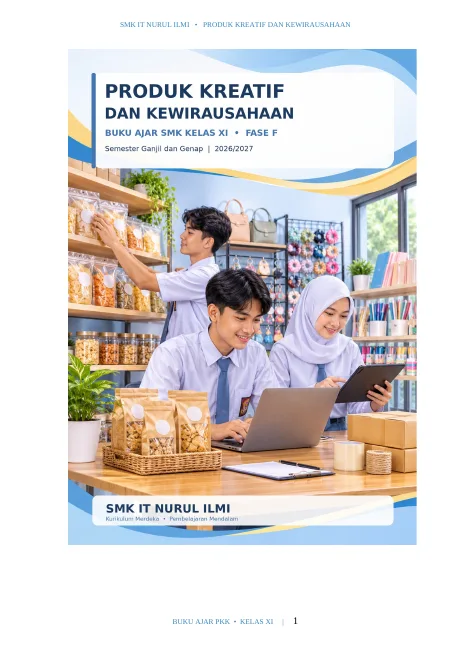
30 materi tersedia.
Coba kata kunci lain atau pilih Semua.
PKK Kelas XI
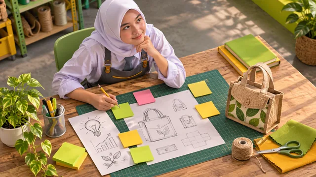
Kreativitas dan Pengembangan Ide Usaha
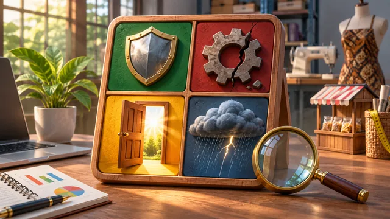
Analisis Peluang Usaha dan SWOT
Riset Pasar dan Perilaku Konsumen
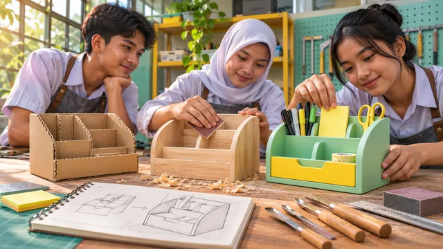
Inovasi Produk dan Design Thinking
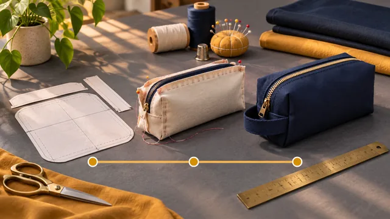
Perencanaan dan Pengembangan Produk
Desain Kemasan, Branding, dan Identitas Produk
PKK Kelas XII
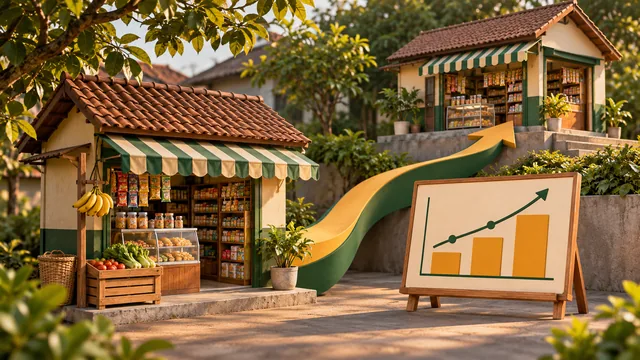
Perencanaan dan Pengembangan Usaha
Manajemen Layanan Bisnis Kelas XI
Administrasi dan Operasional Perkantoran
Pelayanan Prima
Komunikasi Bisnis dan Etika Profesi
Pengelolaan Arsip dan Dokumen Bisnis
Teknologi Digital dalam Layanan Bisnis
Pengelolaan Rapat dan Kegiatan Bisnis
Evaluasi Kualitas Layanan Bisnis
Manajemen Layanan Bisnis Kelas XII
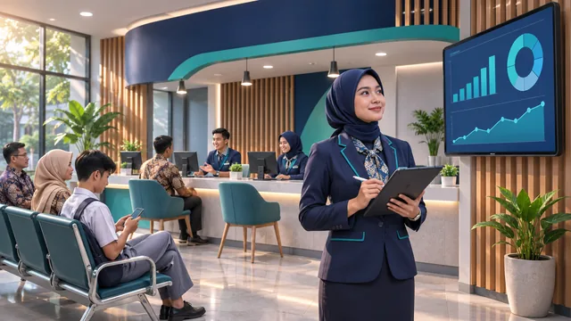
Manajemen Pelayanan Prima
Versi dan format lain
Pengelolaan Administrasi Bisnis
Komunikasi Bisnis Profesional
Pengelolaan Operasional Layanan Bisnis
Teknologi Digital dalam Layanan Bisnis
Pengelolaan Keuangan Administrasi
Evaluasi dan Peningkatan Kualitas Layanan Bisnis
Sejarah Kebudayaan Islam
Dakwah Nabi Muhammad saw. di Madinah
Peran Ilmuwan Masa Daulah Abbasiyah
Informatika
Analisis Data
Pratinjau 15 slide. Gambar dan video asli belum tersedia.
Cyber Guardian: Misi Penjaga Dunia Digital
14 slide tentang keamanan internet dan proteksi data.
Buku Ajar PKK Kelas XI
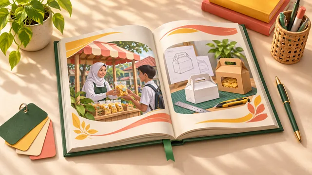
Buku Ajar PKK XI Bergambar
Versi dan format lain
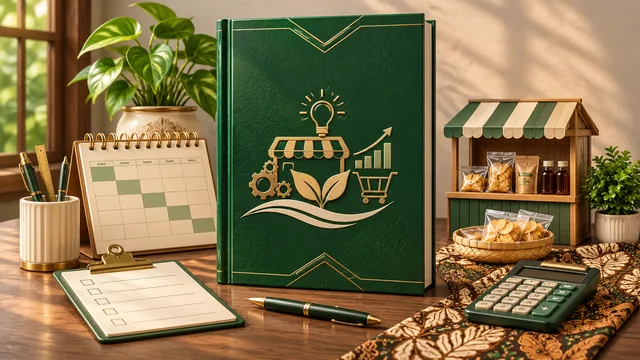
Buku Ajar PKK XI 2026/2027
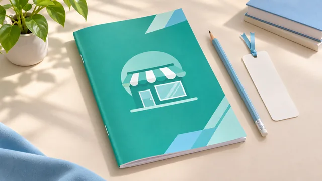
Buku Ajar PKK XI Versi Ringan
Versi dan format lain
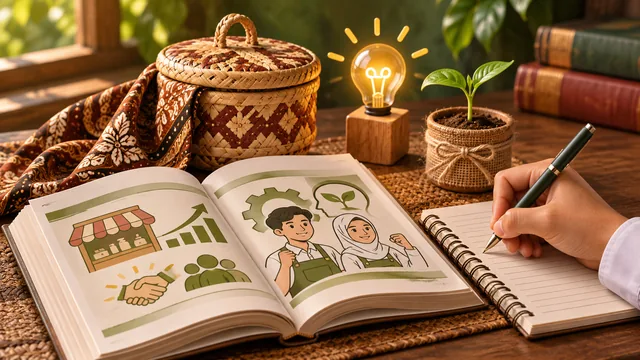